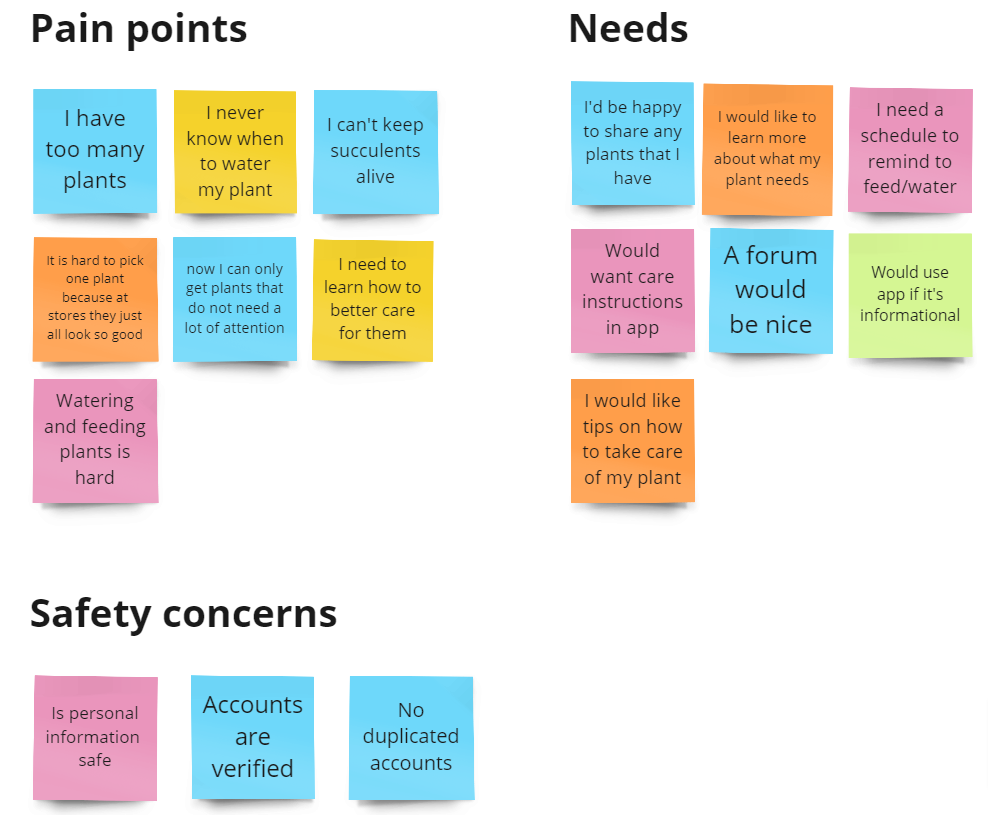
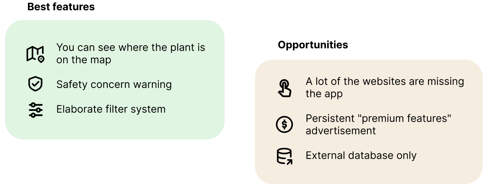

UX/UI designer, researcher (team of 4)
Conceptual project, October 2023
Figma, Miro, Trello, Google (Drive, Docs, Slides, Sheets, Forms), Zoom
I have always had a lot of friends who are absolutely obsessed with house plants. And time after time I have observed their forever struggle - what to do with all the plants growing and multiplying like crazy and where to get a new cute plant to add to their existing and very extensive collection?
Our goal was to create an app that people can use to connect based on similar interests, mainly their plant-babies, share tips and tricks, brag about amazing finds and achievements and seek help when in despair. And the main feature of this potential gem of an app - to meet up with other plant-parents to exchange existing plants to expend their collection.
Plant enthusiasts often face challenges in sharing their excess of plants, gaining useful plant-related information and connecting with like-minded individuals. We have observed that the current methods for exchanging plants and plant-care knowledge are very limited and inefficient. How might we improve the experience of the plant loving community so that our customers can safely and easily share plants in real life and information digitally?
We conducted 6 in person user interviews and 13 online surveys with plant loving people of ages 21-63. Based on collected data we created an affinity diagram to get a clearer view of user pain points and needs.
People do not have safe informational resources available to find a person near them to trade their plants with It is very difficult to maintain all existing plants alive because they all require different set of care practices There's no existing plant-loving community where our users could share their successes, gained knowledge and tips
Based on all conducted research we created a user persona. Meet Olivia!
We analyzed a couple of websites and apps with similar to what we have in mind features. Some of them did not have an app at all, which I think is a must in this day and age.
Olivia takes a hard look at her plant collection and decides that she has too many succulents. The same time she feels like her collection is lacking something leafy and fluffy, so she goes on bloom and finds a perfect person to exchange her plants with.
We decided to focus on a couple of features along with the main one, plant exchange.
Our main focus was on the ability to easily trade plants with others. To make it fun we made it so users will swipe left-right on plants that they do/don't like as you would on dating apps. And if your plant exchange preferences match, you can proceed with communication about desired plant swap. You can find full user flow here.
We all worked on our separate sketches for our part of the app, these are the one I've made for my part.
A couple of digital wireframes to have an idea of what we have done so far.
Clickable prototype in Figma
One of our key learnings from our research was that our users really preferred function over form
We learned that prioritizing the feel of the app was just as, if not more important than the actual look
Add filters for our Trade and location features
Redo all the wireframes to keep it consistent
Move on to the mockups and decide on the color palette and style guide